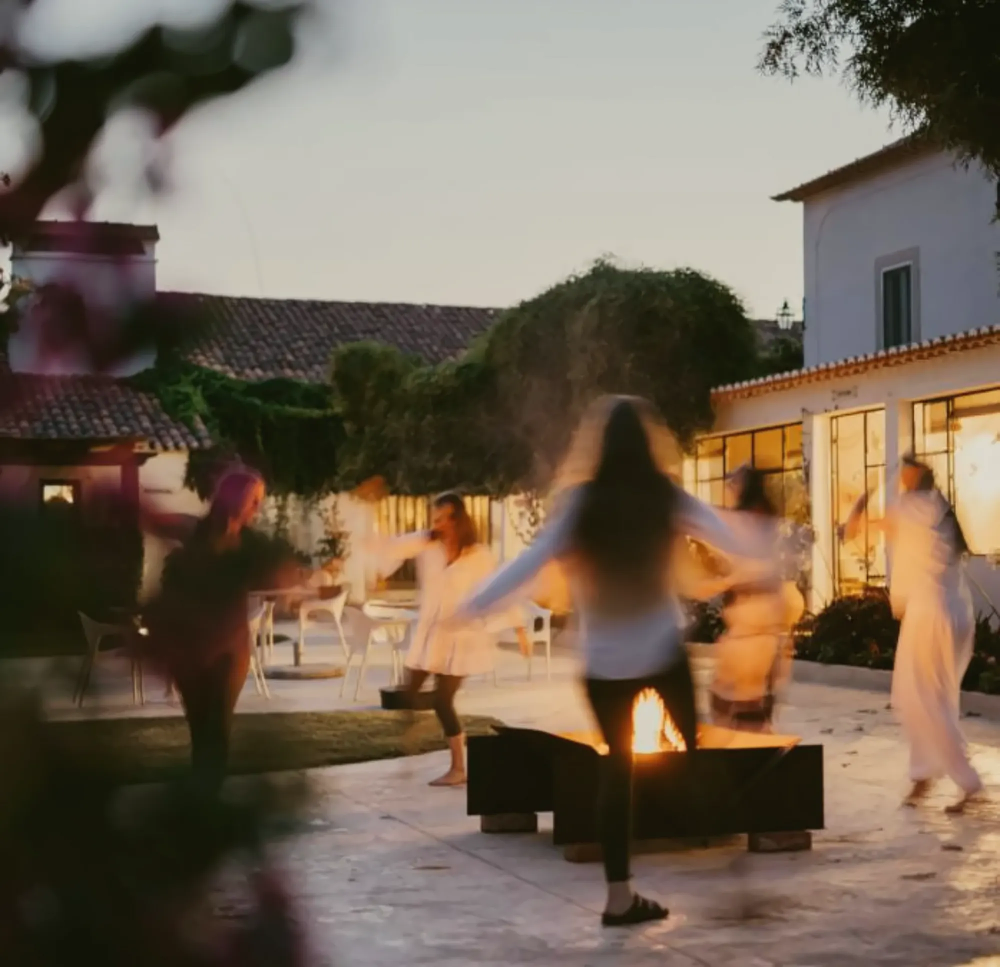
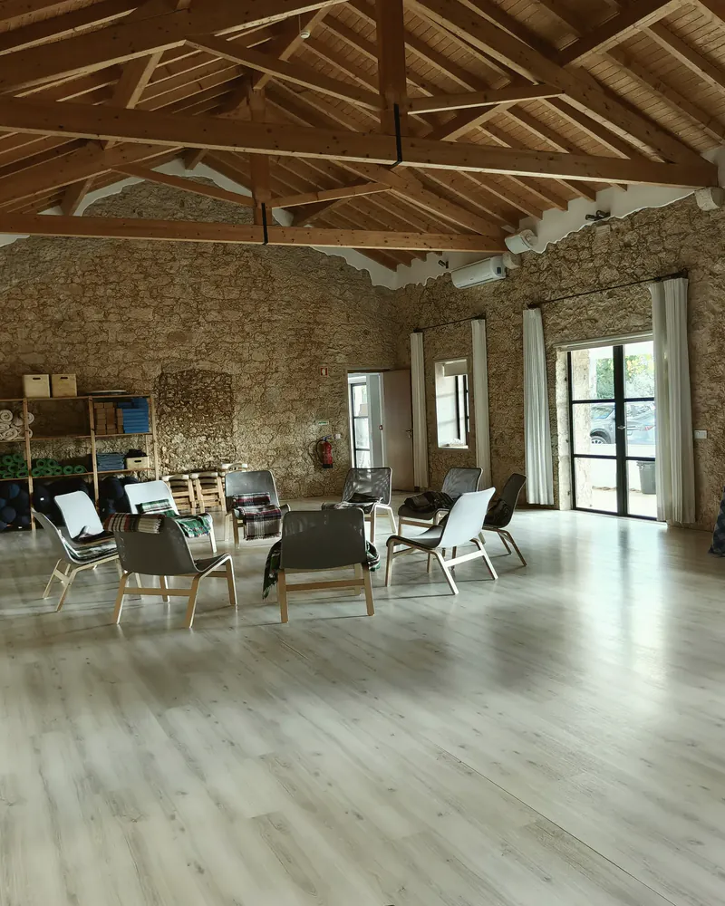
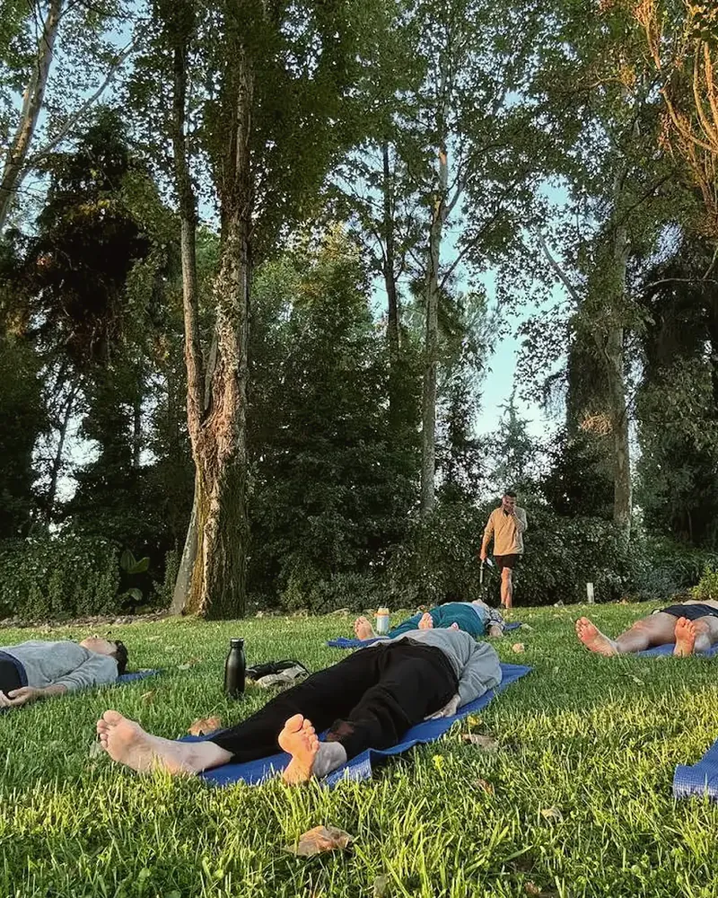
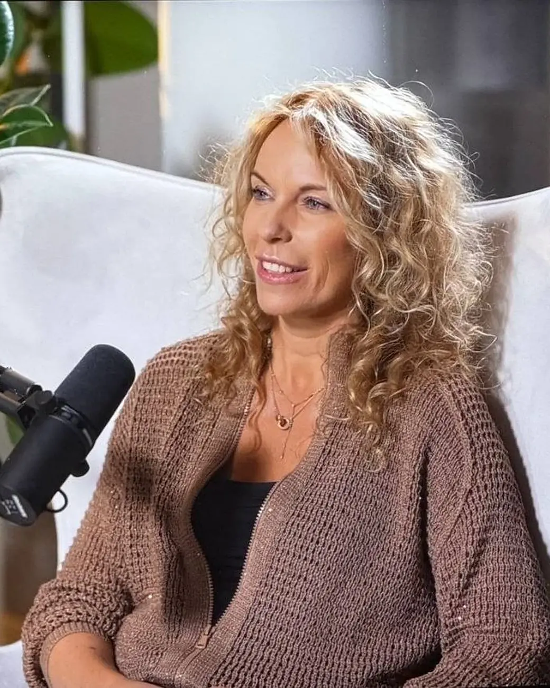
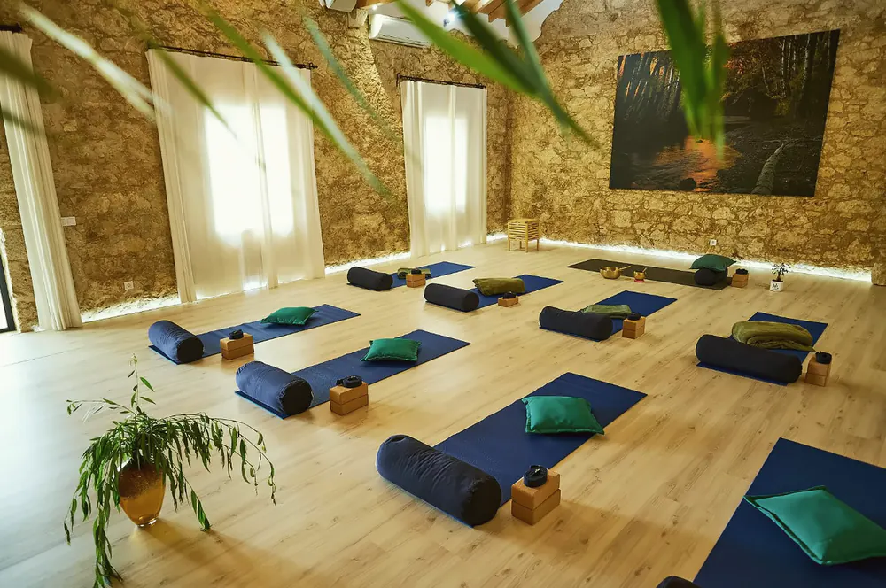
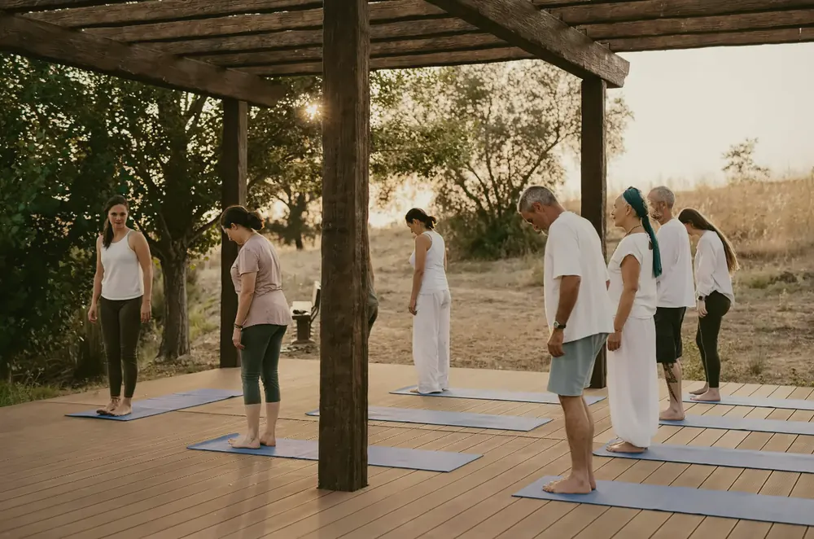
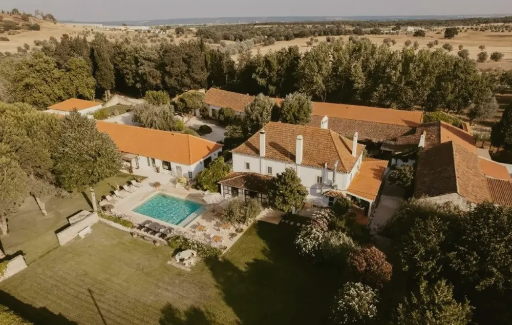
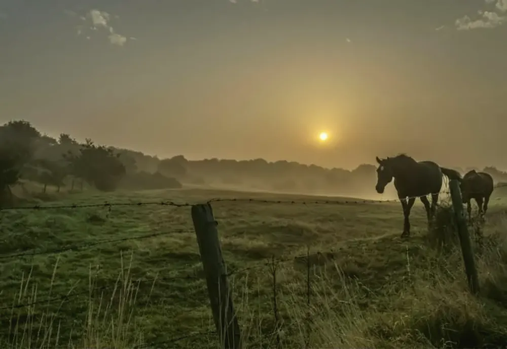

Прибытие. Начало пути
Размещение в усадьбе, знакомство с пространством и участниками, приветственный ужин.


Авторский психологический метод Марины Нахаловой
Искусство раскрывать свой дар
В вас больше, чем вы привыкли видеть.
В каждом человеке заложен уникальный дар.
Способность создавать, любить, чувствовать, принимать решения, воплощать идеи и находить собственный путь.
Но жизненный опыт, семейные сценарии и бессознательные убеждения могут незаметно ограничивать наши возможности.
CHARISMATA — пространство глубокой психологической работы, где авторский метод Марины Нахаловой соединяет исследование личности, семейной истории и межпоколенческих сценариев.
Здесь мы исследуем не только то, что нас ограничивает, но прежде всего то, что в нас ещё не раскрыто.
Мы помогаем человеку открыть доступ к собственным внутренним ресурсам и свободе выбора.


У вас есть результаты, признание, опыт — всё, к чему вы когда-то стремились. Но то, что раньше вдохновляло, больше не радует. Внешне всё благополучно, а внутри всё чаще звучит вопрос: «И это всё?»
Привычные способы решать проблемы, строить отношения и двигаться вперёд перестали помогать. Вы чувствуете, что пришло время перемен, но пока не понимаете, как жить по-новому и с чего начать.
Запутались в собственных желаниях, решениях или обстоятельствах. Возможно, переживаете сложный период и больше не понимаете, чего хотите именно вы. Хочется вновь почувствовать почву под ногами и увидеть направление.
Вы знаете, на что способны, и чувствуете, что впереди гораздо больше возможностей. Новые проекты, творчество, влияние, самореализация. Но что-то невидимое словно удерживает вас в привычных границах.
Меняются люди, обстоятельства, работа, отношения — а результат удивительно похож. Вы снова оказываетесь в знакомых ситуациях и хотите понять, почему это происходит и как перестать повторять один и тот же путь.
На вас многое держится. Вы принимаете решения, несёте ответственность, поддерживаете других. Но за этой силой всё реже остаётся место для собственных чувств, желаний и потребностей.
Вы знаете, чего хотите, но боитесь сделать шаг. Ошибиться, потерять привычное, разочаровать близких, оказаться недостаточно хорошим. Иногда страх настолько привычен, что вы уже не замечаете, сколько решений принимаете не из желания, а из стремления избежать неизвестности.
Остаться или уйти. Сохранить привычное или начать заново. Изменить отношения, профессию, направление жизни. Перед вами несколько дорог, и хочется понять, какая из них действительно ваша.

Психолог, психоаналитический и системный терапевт, специалист по расстановочной работе.
Глубина знаний. Сила опыта. Искусство раскрывать человеческий потенциал.
Почти два десятилетия Марина исследует, как формируется личность, какие внутренние механизмы влияют на наши решения и что помогает человеку обрести доступ к собственной силе.
11 лет назад Марина создала авторскую программу «Истинная Я», которую прошли более 5 000 женщин. Позднее появилась программа «Путь к себе», объединившая около 800 мужчин.
Главное в работе Марины — помочь человеку обнаружить и раскрыть его собственный дар.

За CHARISMATA стоит команда единомышленников, объединённых общей идеей — создать пространство для глубокой внутренней работы, где профессионализм, атмосфера и внимание к каждой детали помогают человеку сосредоточиться на самом главном — на себе.
Наш жизненный опыт, особенно полученный в детстве и юности, формирует убеждения и привычные способы взаимодействия с миром. Со временем мы начинаем воспринимать их как единственно возможную норму.
Исследование и проработка личных сценариев помогут освободиться от ограничений прошлого, раскрыть свою индивидуальность и обрести свободу выбора.
От родителей мы наследуем не только генетические особенности, но и усваиваем модели отношений, убеждения и представления о себе и мире. Они во многом влияют на наше чувство безопасности, уверенность и жизненные решения.
Работа с семейными сценариями освободит внутреннюю силу, даст опору и поможет начать строить собственную жизнь.
Из поколения в поколение передаются семейные убеждения, модели поведения и способы преодоления трудностей. Часто мы неосознанно следуем этим сценариям, даже когда они больше не соответствуют нашей жизни.
Исследование родовой истории сохранит её силу и ценность, освободит от ограничивающих установок и вернёт право жить по собственному выбору.
От понимания себя — к новым возможностям.
Пять дней глубокой психологической работы с Мариной Нахаловой.
Программа объединяет системную работу, психологические и телесные практики, расстановки, исследование личной истории и семейных сценариев.
Понимание внутренних конфликтов, страхов и повторяющихся ситуаций.
Бережная работа с чувствами и переживаниями.
Переосмысление отношений с собой и близкими.
Переход к более осознанным решениям и внутренней свободе.

18–24 апреля. С 19 по 23 апреля — психологическая работа с Мариной.
Размещение в усадьбе, знакомство с пространством и участниками, приветственный ужин.

Первый день психологической работы: по-новому взглянуть на себя и собственную историю.

Отношения, чувства и невидимые связи, которые влияют на нашу жизнь.

Проживание и принятие собственного опыта. Возвращение к телу.

История рода как источник силы, стойкости и внутренней опоры.

Завершающий день работы: найти новое направление. Вечером — гала-ужин.

Неспешное утро, завтрак и прощание.
После глубокой психологической работы человек может начать иначе видеть себя, свои отношения, решения и возможности.
То, что прежде воспринималось как непреодолимое ограничение, становится предметом осознанного выбора.
Меняется отношение к собственному опыту. Появляется больше ясности в желаниях, решениях и отношениях с людьми.
Иногда это ощущается так, словно меняется само поле жизни.
То, что мы называем чудом, начинается с момента, когда человек открывает доступ к собственному потенциалу.
Шесть ночей в уединённой усадьбе среди природы Португалии.
Здесь нет необходимости спешить и соответствовать ожиданиям.
Природа, тишина, продуманный комфорт и внимание к деталям становятся естественным продолжением глубокой психологической работы.
Все приглашённые специалисты приезжают непосредственно к нам. Участникам не нужно покидать усадьбу для участия в программе.


В группе не больше 25 человек, каждый проходит предварительное знакомство.
Вне привычных ролей и достижений все равны. По вечерам — огонь, разговоры или тишина.
Цена за всю программу на одного участника.
Участие возможно после предварительного отбора и личного знакомства с Мариной.
Количество мест ограничено. Отправка анкеты не гарантирует участие.
Начните со знакомства: девять коротких вопросов, около пяти минут.
Анкету читает Марина. Ответы видят только она и организаторы программы.
Она лично читает каждую заявку. Мы напишем вам, чтобы договориться об онлайн-встрече.
Отправка анкеты не гарантирует участие: решение принимается после знакомства и оно взаимное.